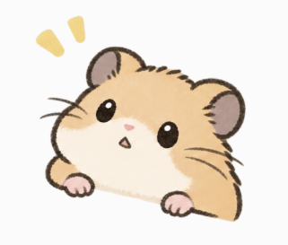

햄스터와 함께하는 AI 질문 연습
좋은 질문을 쓰고,
작은 햄스터를 키워요.
AI에게 묻기 전, 어디까지 혼자 해볼 수 있을까요?
힌트나 검토를 요청하는 질문을 쓰면 햄스터가 기뻐해요.
질문 연습
AI에게 무엇을 물어볼까요?

AI 과의존 신호
Airi의 질문 코칭
이렇게 물어보면 어때요?
쉬어가는 시간
햄스터 집
간식을 먹으면 친밀도가 올라가요.
해바라기씨 사용
햄스터 상점
주간 통계
질문 습관을 한 주씩 돌아봐요.
확인한 질문0건활동 0일
스스로 확인하는 질문0건힌트 · 풀이 검토 · 근거 확인
과의존 신호 비율—기록 대기
요일별 질문
색상별 질문 수를 비교해요.
질문 구성
- 스스로 확인0건
- 과의존 신호0건
- 그 외0건
4주 활동 달력
색이 진할수록 확인한 질문이 많아요.| 주 시작일 | 월 | 화 | 수 | 목 | 금 | 토 | 일 |
|---|
질문 확인을 누른 기록으로 계산해요. 같은 날 확인한 동일한 문장은 한 번만 집계해요.